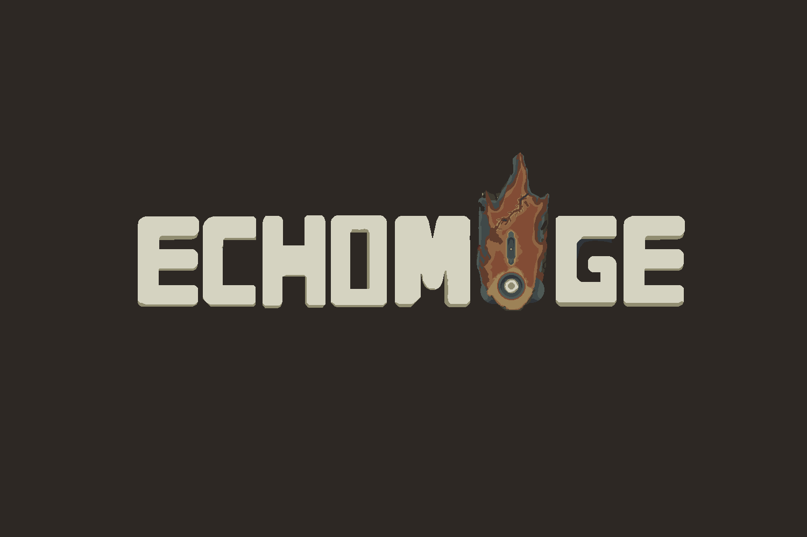

2025 - Now
Echomage
My long-term project made in Unity. Inspired by Ars Magica 2 mod from Minecraft, Echomage features a complex spell-casting system, fast-paced combat and RPG-styled gameplay and progression.